library(tidyverse)
library(summarytools)
library(lubridate)
library(ggplot2)
library(dplyr)
library(hrbrthemes)
library(scales)
library(sf)
library(treemap)
library(treemapify)
library(timeDate)
library(forcats)
library(hrbrthemes)
library(stringr)
library(knitr)
library(kableExtra)
library(GGally)
library(patchwork)
knitr::opts_chunk$set(echo = FALSE, warning=FALSE, message=FALSE)Final Project: Sue-Ellen Duffy
final_project
Boston Crash Trends 2012-2022
Introduction
The dataset was retrieved from the Massachusetts Department of Transportation data extraction service. I requested publicly available crash data for Boston municipality for the specific years of 2012-2022 and received a CSV file. Car crashes are reported to the Registry of Motor Vehicle and from there the Department of Transportation makes data available to the public.
This dataset includes 45,980 individual crashes in Boston from 2012-2022 which are represented by each row in the dataset. The dataset includes crash information including date, time, weather and lighting conditions and the severity of each crash. In regards to location, the dataset includes the travel direction of the vehicles, proximity to certain landmarks such as an exit or roadway intersection and the coordinates (latitude and longitude) of the crash point.
Post-pandemic car ownership and commuting by car has increased in an astonishing way - not to help the matter, train commutes are slower than ever. This dataset cannot delve deep enough to understand the scope of this transit issue and traffic data is not publicly available. This dataset will at least allow me to analyze city crashes that may yield some understanding about the implications of an increase in car commuting to the city. In a 2022 report by Inrix, Boston ranked 4th on the Global Traffic Scorecard, but not in the good way.
Questions
Are crashes in Boston increasing overtime? What type if any are increasing over time?
Are there any correlations to time of day, date, or road surface conditions that implicate a higher severity of crash and or more crashes overall?
How did the pandemic affect Boston crashes?
Data Description
Crash Date - Date occurrence of crash (year, month, and day)
Crash Time - Time occurrence of crash (hour, min, and sec)
Crash Severity - Indicates the severity of a crash based on the most severe injury to any person based on 3 levels - Fatal injury, Non-fatal injury, Property damage only (no injury) - and either Unknown or Not Reported
Maximum Injury Severity Reported - Reported injury if both fatal and non-fatal will be categorized “Fatal injury” as it is the most severe reported injury
Non_Motorist_Type - The type of non-motorist
Crash Hour - [added for analysis] Time occurrence of crash (hour only)
Crash Timegroup - [added for analysis] Time occurrence of crash (defined by time intervals: (Overnight = 2AM-5:59AM; Morning = 6AM-9:59AM; Midday = 10AM-1:59PM; Afternoon = 2PM-5:59PM; Evening = 6PM-9:59PM; Late Night = 10PM-1:59AM)
Crash Count - [added for analysis] Number of crash occurrences per day
Crash Countgroup - [added for analysis] Number of crash occurrences per day (defined by group intervals: (1-5, 6-10, 11-15, 16-20, 21-25, 26-30, 31-35, 36-40)
Handling Unknown, Not Reported, NA or Missing data
Unknown/Not Reported Data There were 45,980 crashes reported from 2012 to 2022. Of those crashes 4,002 (8.7%) were reported with a Crash Severity of “Unknown” or “Not Reported” the majority are reported as resulting in property damage only with no injuries reported. Ranking second is non-fatal injuries, and finally a small portion are rated as fatal injuries.
- For the purpose of this report, and for the category of “Crash Severity” only, I have combined these into “Unknown/Not Reported”.
Why are some crashes reported as Unknown or Not Reported? Possibilities:
internal clerical errors
reports must be completed within 5 days of crash (leading to rushed answers)
decision fatigue from having to fill out the report alone post accident
data missing due to personal choice in managing insurance claims
Unknown/Not Reported Over Time The category “Unknown” was used more so in later years, with a peak in 2021. Whereas “Not Reported” had peaks in 2012 and 2017 and very low numbers in 2020-2022.
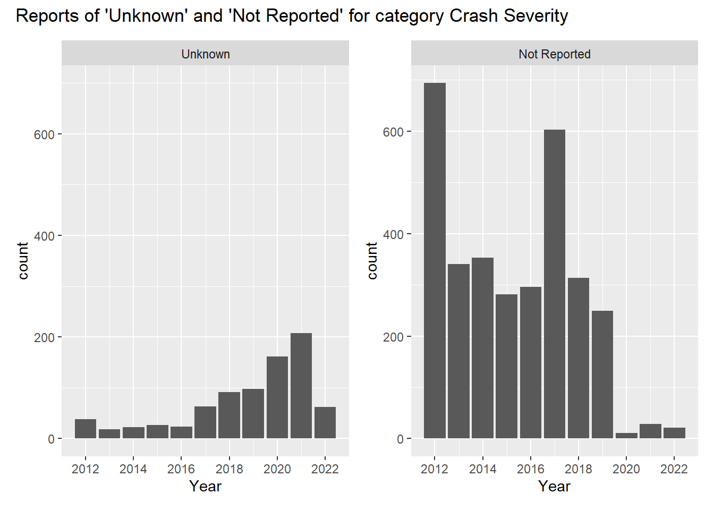
Unknown/Not Reported Data Inconsistencies Crashes that were reported under Crash Severity as being “Unknown” or “Not Reported” had 50 inconsistently reported injuries in another column of the data. All 50 reporting inconsistencies occurred between May 2018 and October 2019:
Crash Severity “Not Reported” has 42 reports of maximum injury reports across 6 categories that suggest a possible injury.
Crash Severity “Unknown” has 7 reports of non-fatal injury as either “Non-incapacitating” or “Possible” and 1 report of “No apparent injury”.
Missing data/NAs and outliers Road Surface Condition has an NA count of n=368. For the purpose of this report I am considering this sort of NA to be comparable with “Not Reported” or “Unknown” and leave the data in the dataset as I am only looking at a few indicators of Road Surface Condition and not analyzing it in depth.
Manner of Collision also has an NA count of n=5. I will leave that data alone as well.
Overview of Crash Data in Boston 2012-2022
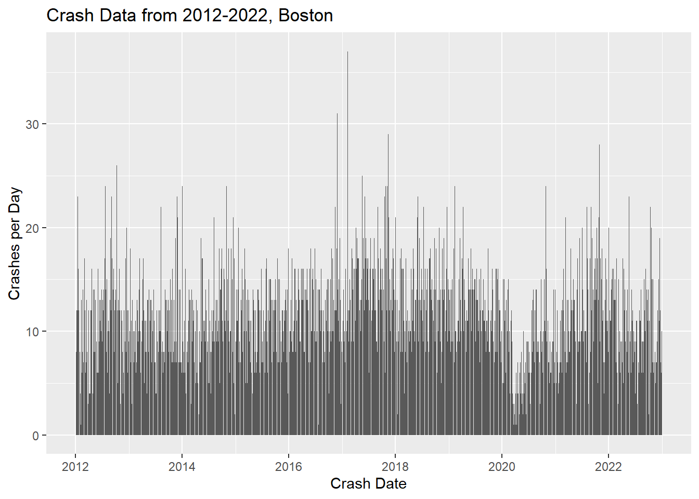
Boston averaged 13 crashes per day (from 2012-2022).
| City_Town_Name | min | max | mean | median | standard deviation |
|---|---|---|---|---|---|
| BOSTON | 1 | 37 | 13.21274 | 13 | 4.682742 |
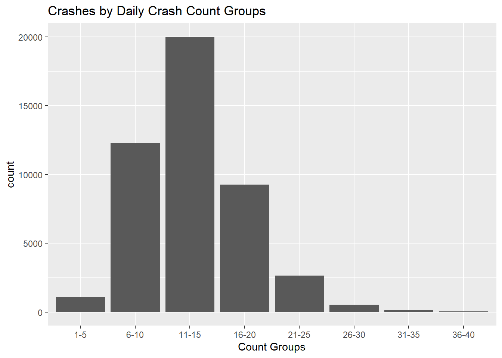
The following graph shows the density of crashes with crash counts per day. As opposed to the bargraph charting all crashes by total counts in the Overview, this graph lets us see outliers not only in the top portion of the graph with the most counts, but also in the lowest counts. We can now see the pockets of time when there were, for instance, more than 6 crashes per day everyday, like in 2017, or the time when in 2020 there were many instances of having only a 1-3 crashes per day.
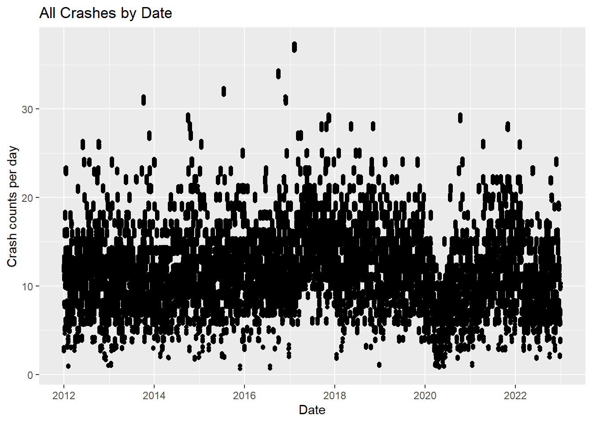
Boston saw the most crashes on Fridays (2012-2022).
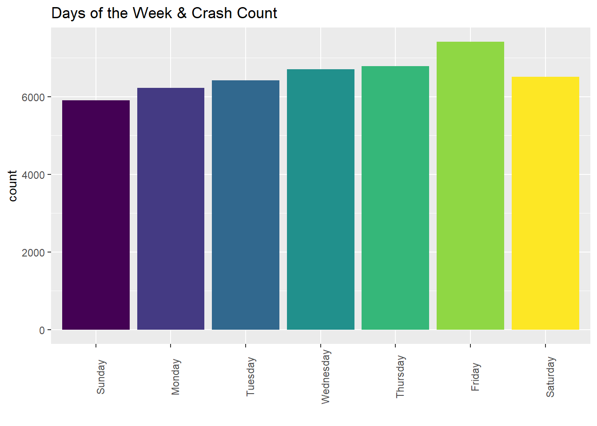
When subsetted for Crash Severity, however Boston sees the most fatal accidents on Wednesday and Saturday. (The following graph shows Crash Severity: Fatal injury, Non-fatal injury, and Property damage. It does not include Unknown/Not Reported)
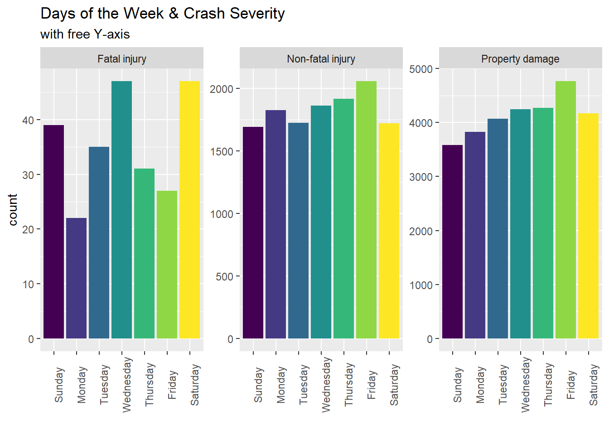
October is the month with the most crashes and the highest average crash rate in Boston (2012-2022), averaging 15 crashes per day.
Buckle up, this tab is a longer analysis section.
| Month | min | max | mean | median | standard_deviation |
|---|---|---|---|---|---|
| Jan | 1 | 26 | 12.72292 | 12 | 4.561773 |
| Feb | 1 | 37 | 12.60901 | 12 | 4.740875 |
| Mar | 1 | 27 | 12.38372 | 12 | 4.475690 |
| Apr | 1 | 26 | 12.23283 | 12 | 4.174287 |
| May | 1 | 28 | 13.22847 | 13 | 4.504422 |
| Jun | 1 | 26 | 13.50594 | 13 | 4.349584 |
| Jul | 1 | 32 | 13.16479 | 13 | 4.600828 |
| Aug | 3 | 22 | 12.46228 | 12 | 3.640509 |
| Sep | 2 | 28 | 13.42582 | 13 | 4.272076 |
| Oct | 2 | 34 | 15.13079 | 14 | 5.736485 |
| Nov | 1 | 31 | 13.87772 | 13 | 5.403354 |
| Dec | 1 | 25 | 13.28206 | 13 | 4.378017 |
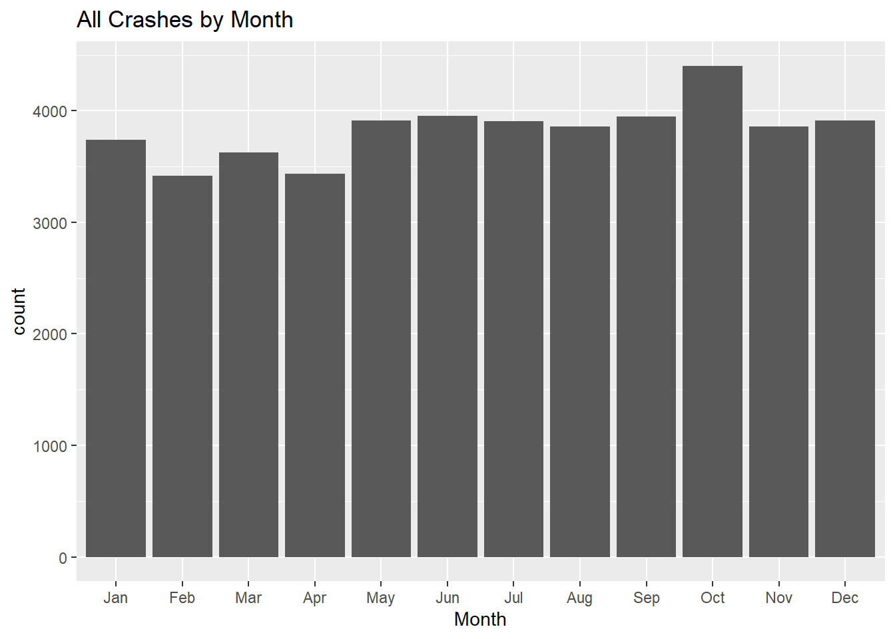
What could we learn about October?
+ Do road conditions have something to do with the increase in accidents?
+ Are there different types of accidents in October?
+ Is it all happening around Halloween? Road Surface Conditions
When we subset the data for October by road surface condition we see that “dry” is the predominant condition, however we see “Wet” with a large portion of data as well.
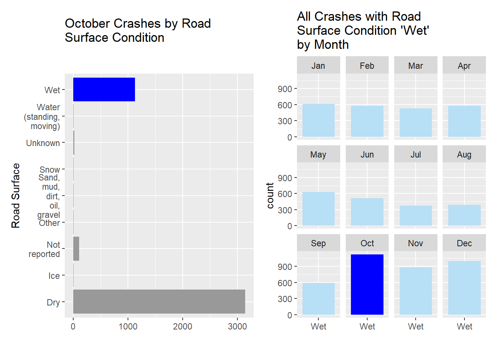
While October has the most crashes with “Wet” road surface conditions reported, October also has the most crashes overall. In order to understand whether this road surface condition “Wet” was a factor in making October the month with the highest crash rating, I looked at the percentages of crashes in each month that occurred under “Wet” road surface conditions. October and December both have 25% of crashes (per their respective months) with “Wet” road surface conditions reported.
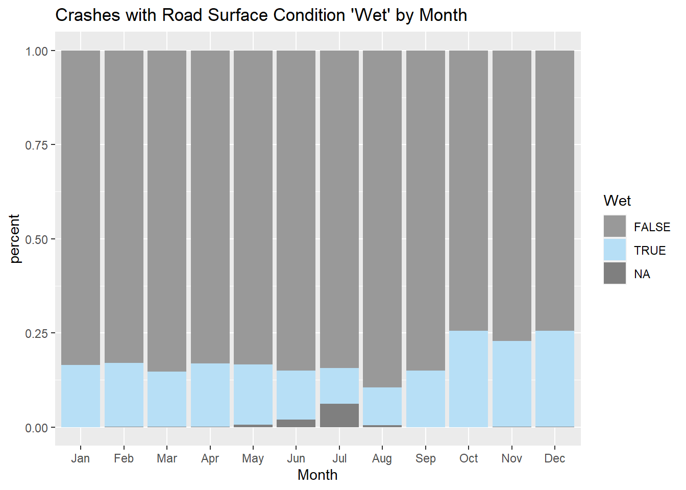
| Month | Dry | Ice | Not reported | Other | Sand, mud, dirt, oil, gravel | Slush | Snow | Unknown | Water (standing, moving) | Wet | NA | total |
|---|---|---|---|---|---|---|---|---|---|---|---|---|
| Jan | 68.8 | 2.9 | 3.0 | 0.3 | 0.7 | 0.7 | 6.6 | 0.5 | 0.1 | 16.4 | 0.0 | 3739 |
| Feb | 66.3 | 2.8 | 3.4 | 0.1 | 0.5 | 1.3 | 8.3 | 0.2 | 0.1 | 17.0 | 0.0 | 3416 |
| Mar | 77.4 | 1.3 | 2.7 | 0.1 | 0.2 | 0.3 | 2.8 | 0.5 | 0.1 | 14.6 | 0.1 | 3622 |
| Apr | 79.8 | 0.1 | 2.2 | 0.0 | 0.0 | 0.1 | 0.4 | 0.4 | 0.2 | 16.8 | 0.1 | 3433 |
| May | 81.5 | 0.0 | 2.0 | 0.1 | 0.0 | 0.0 | 0.0 | 0.2 | 0.1 | 16.1 | 0.6 | 3891 |
| Jun | 83.2 | 0.0 | 2.9 | 0.1 | 0.1 | 0.0 | 0.1 | 0.5 | 0.1 | 13.2 | 2.0 | 3878 |
| Jul | 86.6 | 0.0 | 2.6 | 0.1 | 0.2 | 0.0 | 0.0 | 0.4 | 0.1 | 10.1 | 6.6 | 3667 |
| Aug | 87.2 | 0.0 | 2.0 | 0.1 | 0.1 | 0.0 | 0.0 | 0.5 | 0.1 | 10.1 | 0.4 | 3841 |
| Sep | 82.1 | 0.0 | 2.4 | 0.0 | 0.1 | 0.0 | 0.0 | 0.4 | 0.0 | 15.0 | 0.0 | 3950 |
| Oct | 71.4 | 0.1 | 2.4 | 0.0 | 0.0 | 0.0 | 0.1 | 0.3 | 0.1 | 25.5 | 0.0 | 4404 |
| Nov | 73.2 | 0.2 | 2.7 | 0.1 | 0.0 | 0.1 | 0.4 | 0.5 | 0.1 | 22.9 | 0.0 | 3859 |
| Dec | 66.1 | 2.0 | 2.5 | 0.1 | 0.2 | 0.4 | 3.0 | 0.3 | 0.1 | 25.5 | 0.1 | 3912 |
Non-Motorist Involvement
October is the month with the most instances of Non-motorist type involvement in crashes with 253 reports.
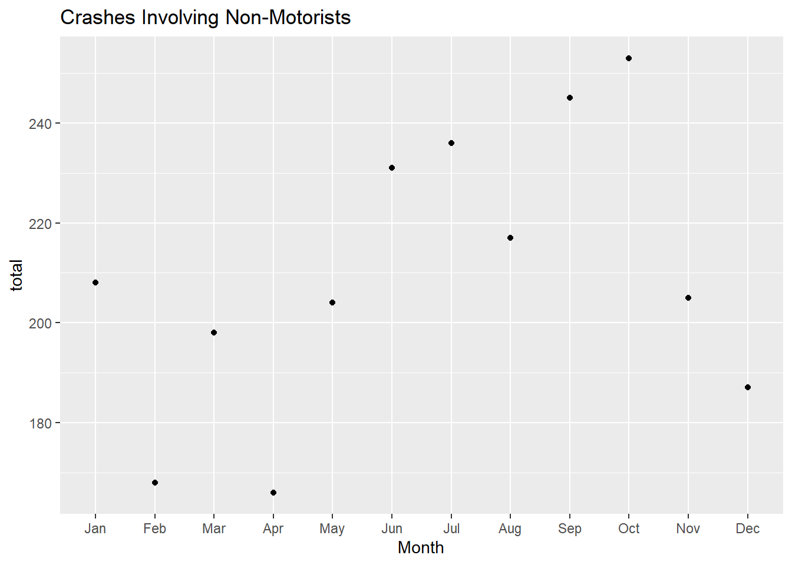
However proportional to the total number of crashes per Month, we see that July and September have the highest % of crashes involving non-motorist types.
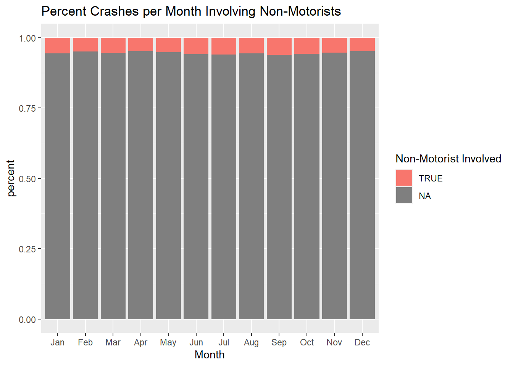
Crash Severity
Let’s look at how each crash severity rating factors into this month analysis.
We can now see that the month with the highest Fatal injury is reported in July, with dips in spring, winter, and October while Non-fatal injuries and Property damage peak in October. The peak for Unknown/Not Reported crashes is in May and June.
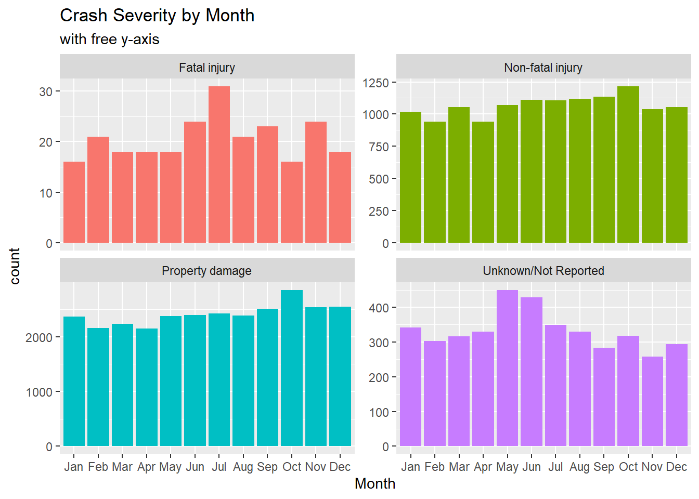
Dates within October
I can’t call Halloween out on this one.
October 4th has the most counts of crashes in the month, which happens to be National Taco Day and World Animal Day.
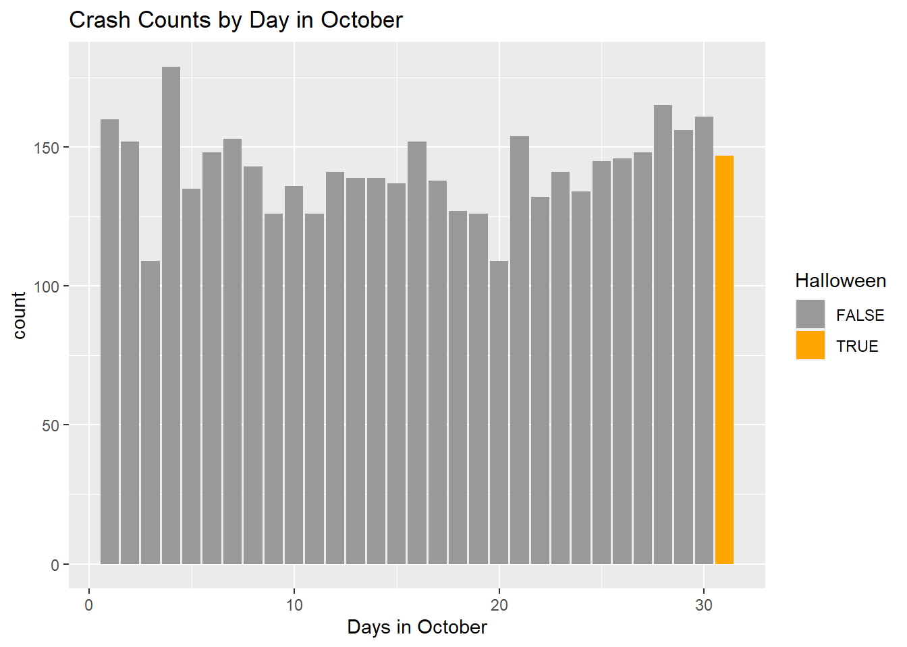
2017 was the year with the most crashes in Boston (2012-2022).
The data shows 2017 as a peak with a sharp drop off in 2020 (due to the pandemic and reduced traffic flow) then a climb back up in 2021 almost matching crash reports from 2019. Of course this data shows that post-pandemic rates of car crashes have gone back up, but it is not as high as crashes in 2017.
# A tibble: 11 × 6
Year min max mean median standard_deviation
<dbl> <int> <int> <dbl> <dbl> <dbl>
1 2012 1 26 12.5 12 4.41
2 2013 1 31 12.4 12 4.61
3 2014 2 29 12.8 12 4.78
4 2015 1 32 13.2 13 4.59
5 2016 1 34 13.2 13 4.44
6 2017 6 37 15.8 15 4.72
7 2018 1 28 14.6 14 4.44
8 2019 4 24 13.3 13 3.92
9 2020 1 29 10.6 10 4.45
10 2021 1 28 13.1 13 4.70
11 2022 2 26 12.0 12 4.37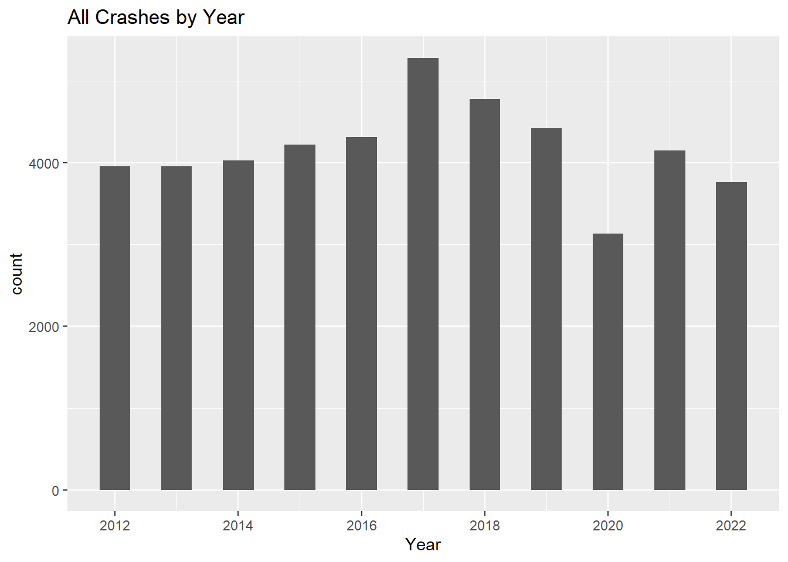
What happened in 2017 and were these crashes somehow different from crashes in other years?
Road Surface Conditions
2017 had the most incidents of crash where “Ice” was the indicated road surface condition. Not the most significant data point considering its low n(79) but interesting none the less.
| Dry | Ice | Not reported | Other | Sand, mud, dirt, oil, gravel | Slush | Snow | Unknown | Water (standing, moving) | Wet | |
|---|---|---|---|---|---|---|---|---|---|---|
| 2012 | 2814 | 13 | 240 | 3 | 11 | 6 | 28 | 17 | 5 | 817 |
| 2013 | 2912 | 25 | 196 | 4 | 12 | 14 | 90 | 3 | 1 | 694 |
| 2014 | 2878 | 28 | 239 | 3 | 10 | 10 | 71 | 10 | 6 | 768 |
| 2015 | 3188 | 47 | 140 | 3 | 14 | 24 | 133 | 9 | 2 | 660 |
| 2016 | 3451 | 15 | 103 | 4 | 2 | 5 | 69 | 9 | 2 | 655 |
| 2017 | 4133 | 79 | 79 | 5 | 6 | 10 | 99 | 50 | 5 | 813 |
| 2018 | 3737 | 30 | 42 | 3 | 3 | 6 | 61 | 39 | 4 | 849 |
| 2019 | 3221 | 33 | 20 | 1 | 9 | 7 | 88 | 14 | 4 | 663 |
| 2020 | 2460 | 16 | 24 | 4 | 2 | 5 | 37 | 10 | 4 | 568 |
| 2021 | 3295 | 6 | 46 | 1 | 1 | 5 | 47 | 9 | 4 | 733 |
| 2022 | 3006 | 47 | 38 | 3 | 6 | 10 | 66 | 6 | 1 | 576 |
Number of Vehicles Involved
2017 had the most 2 car accidents and had 1 instance each of a 12 car and 18 car crash. Both of these high number crashes were in fact Ice related.
- While a crash may involve multiple cars, the counts recorded throughout the data and this analysis are on individual crashes (regardless of how many cars are involved in the crash)
| 0 | 1 | 2 | 3 | 4 | 5 | 6 | 7 | 8 | 9 | 10 | 11 | 12 | 18 | |
|---|---|---|---|---|---|---|---|---|---|---|---|---|---|---|
| 2012 | 1 | 1109 | 2366 | 372 | 73 | 27 | 4 | 2 | 0 | 1 | 0 | 0 | 0 | 0 |
| 2013 | 0 | 1047 | 2354 | 422 | 98 | 19 | 8 | 0 | 2 | 0 | 0 | 1 | 0 | 0 |
| 2014 | 0 | 1059 | 2383 | 463 | 92 | 22 | 3 | 0 | 0 | 1 | 0 | 0 | 0 | 0 |
| 2015 | 0 | 981 | 2637 | 452 | 127 | 20 | 5 | 0 | 0 | 0 | 0 | 0 | 0 | 0 |
| 2016 | 0 | 933 | 2726 | 501 | 125 | 22 | 5 | 2 | 0 | 0 | 1 | 0 | 0 | 0 |
| 2017 | 0 | 1131 | 3383 | 581 | 140 | 32 | 9 | 1 | 1 | 1 | 0 | 0 | 1 | 1 |
| 2018 | 0 | 951 | 3121 | 526 | 143 | 19 | 9 | 4 | 2 | 1 | 0 | 0 | 0 | 0 |
| 2019 | 0 | 825 | 2914 | 530 | 108 | 30 | 10 | 4 | 0 | 0 | 0 | 0 | 0 | 0 |
| 2020 | 0 | 860 | 1829 | 331 | 77 | 23 | 6 | 3 | 0 | 1 | 0 | 0 | 0 | 0 |
| 2021 | 0 | 948 | 2567 | 484 | 106 | 28 | 10 | 3 | 0 | 0 | 1 | 0 | 0 | 0 |
| 2022 | 0 | 855 | 2367 | 423 | 81 | 26 | 4 | 1 | 0 | 2 | 0 | 0 | 0 | 0 |
Non-Motorists Involved
2017 is the year with the most crashes involving Non-Motorists with 378 crashes.
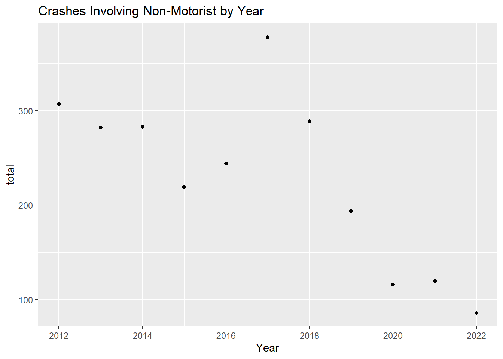
However, again, while it has the most instances of Non-motorist involvement, 2017 has just about the same percent of crashes as 2012 and 2013, with around 7% of all crashes in each of those years involving non-motorists
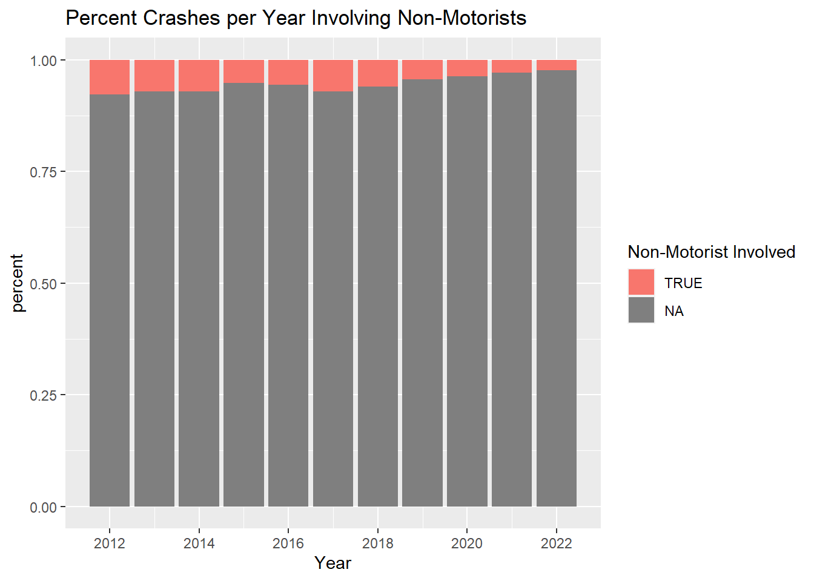
Most crashes occur in the afternoon, between 3pm and 5pm, in Boston (2012-2022).
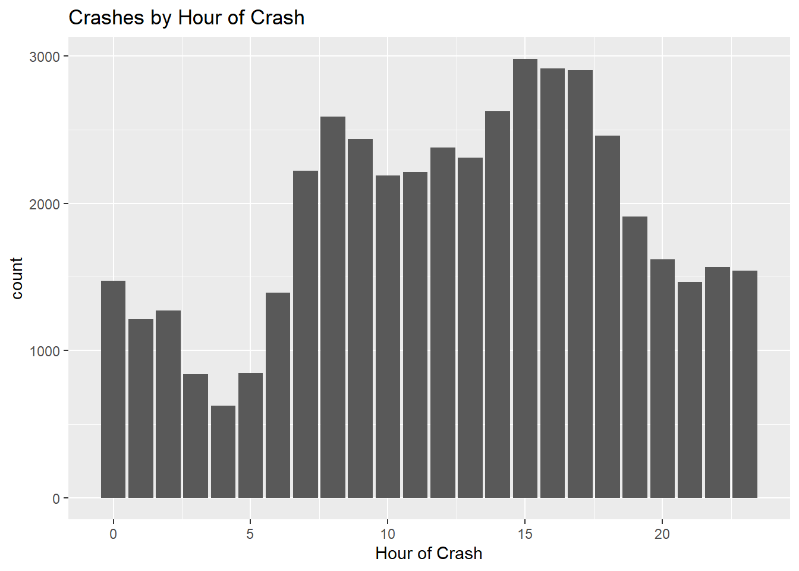
While Non-fatal, Property damage, Unknown/Not Reported all follow the same pattern of peaks in the afternoon, crashes resulting in Fatal injury peak at late night.
Time occurrence of crash (defined by time intervals: (Overnight = 2AM-5:59AM; Morning = 6AM-9:59AM; Midday = 10AM-1:59PM; Afternoon = 2PM-5:59PM; Evening = 6PM-9:59PM; Late Night = 10PM-1:59AM)
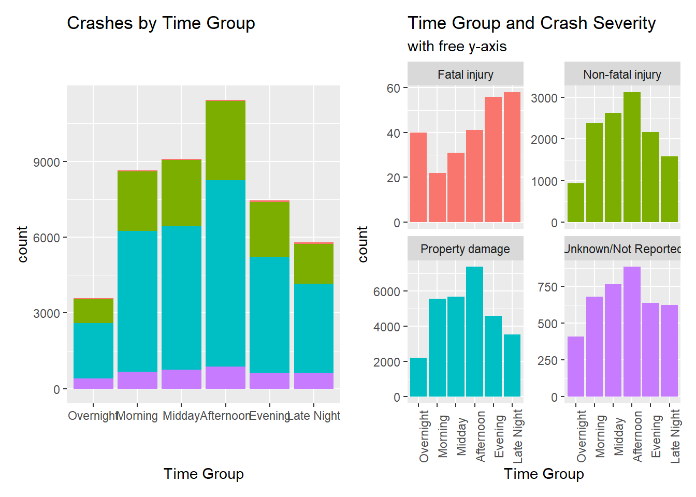
Instances of 2 car crashes have been on an overall trend upwards in Boston, whereas instances of 1 car crashes are decreasing slightly.
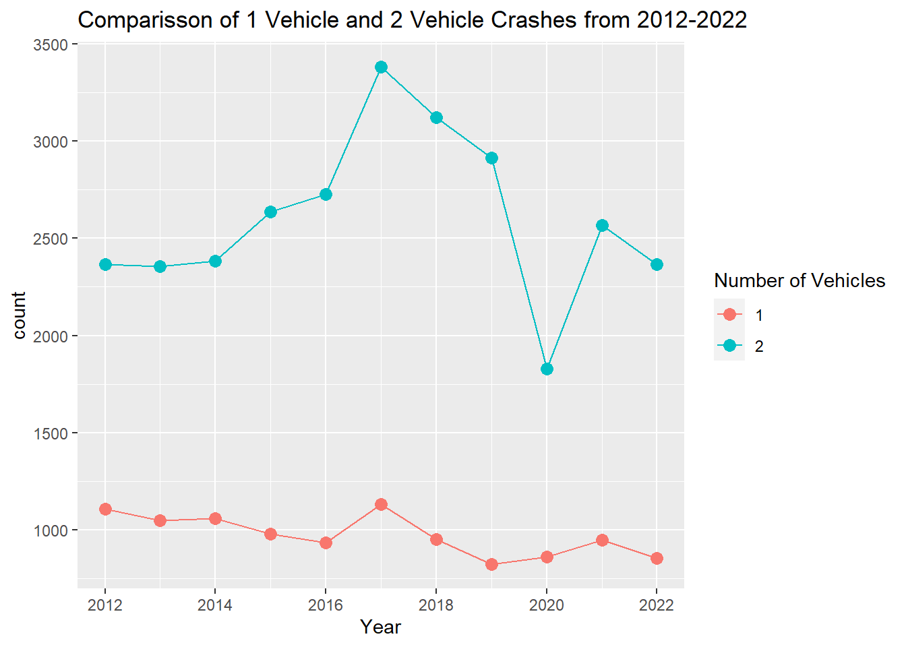
To the surprise of no one (who has driven in the city of Boston), we see that Rear-ends are the manner of collision that occurs most often in Boston.
Following in second, third, and fourth respectively are: Single vehicle crashes, Angle crashes, and Sideswipe, same direction crashes.
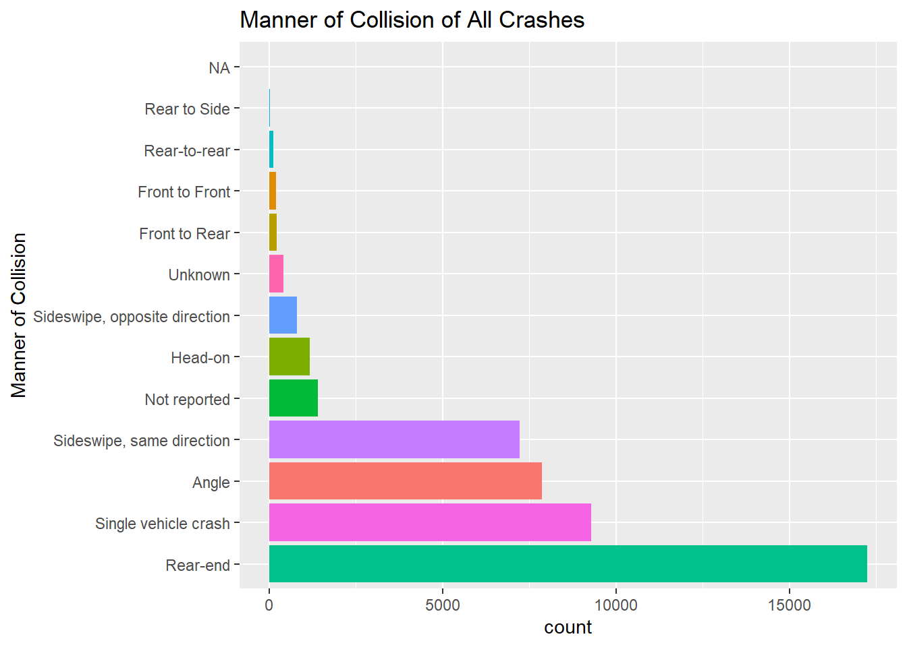
When we subset this data for Crash Severity, we see that fatal injuries occur with the most frequency in single vehicle crashes. The second major difference we see for crashes with fatal injuries is a high proportion of “Not Reported” for manner of collision.
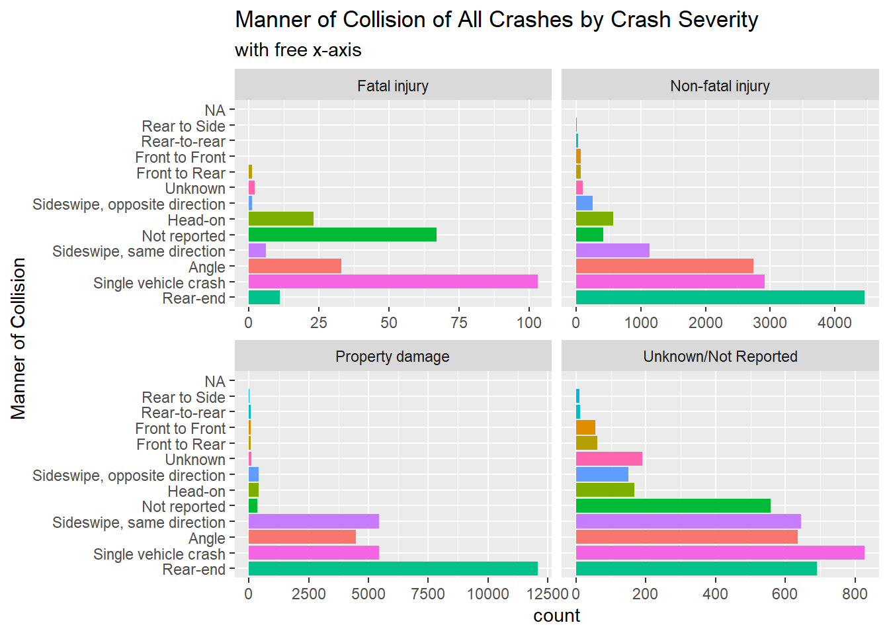
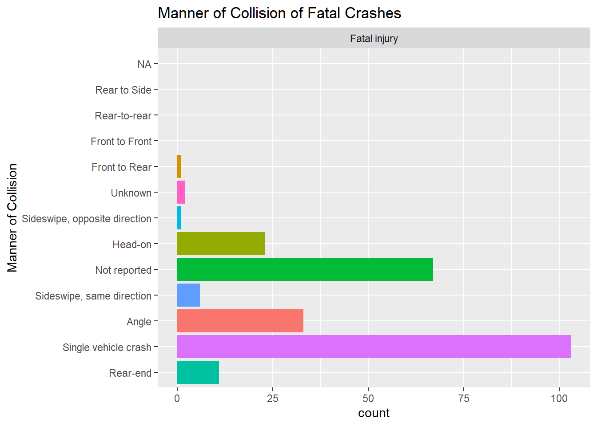
In regards to Crash Severity, the vast majority of crashes in Boston only involve property damage. The lowest proportion, with 0.05% of all crashes, result in fatal injury.
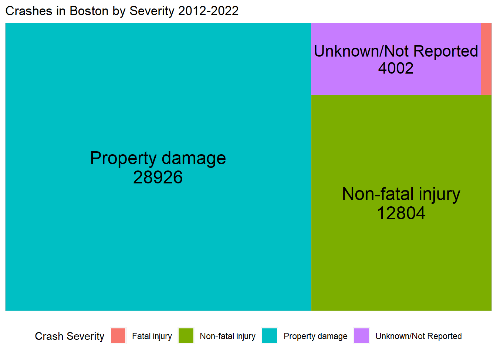
| Fatal injury | Non-fatal injury | Property damage | Unknown/Not Reported | |
|---|---|---|---|---|
| BOSTON | 248 | 12804 | 28926 | 4002 |
Final Conclusion and Takeaways
Overall instances of crashes in Boston are changing over time. Two major trends happened: crashes increased from 2012 to 2017, and crashes drastically decreased in 2020. I did not see what I was expecting to see in regards to crashes post-pandemic. As a resident of Boston, I would have assumed accidents had reached their peak in 2022.
Day of the week with the most crashes: Friday
Month with the most crashes: October
Year with the most crashes: 2017
63% of accidents in the city lead to property damage only
What happened in 2017 I still am unclear about, there are certain trends I can parse out in the data but I am left with more questions. Were gas prices really inexpensive in 2017? Were there policies put in place in 2018 to mitigate factors that led to the high rates of crash in 2017?
Next steps
Coordinates! The coordinate data would be fascinating to study. Do sideswipes happen on tight 2 way sidestreets? Do crashes involving pedestrians happen near train stations? Do most rear-ends happen at traffic lights? (Personal anecdote: I got hit by a truck at a red light because the driver was “looking at his gps, and the company truck has bad brakes”)
Number of Vehicles per Crash This was a striking last minute discovery and I’d love to analyze this more. I did not know how to do analysis in R but off screen (on excel) I was able to do some preliminary calculations showing that one car:two car crashes were changing from 1:2 to 1:3 ratio over time and that’s interesting. Does that shed light onto the changing proximity of cars, meaning that more cars, packed in tighter, might mean more cars inevitably involved in a single accident?
Operator Error (utilizing Person Level crash data) MassDot provides person level data involved in each crash. This would have been far too much for me to join person level and crash level data together in this one assignment. However, I would be curious to see what trends have transpired over time. Are more drivers crashing because they are distracted? Are the ages of drivers involved in accidents going up? (I did hear recently that many younger folks are waiting longer to drive, but I have no data to back that up…yet!)
Takeaways
As my first project in R, I bit off quite a lot. I had intended to analyze the coordinates of crashes, however after realizing I needed to understand a fair bit more about the data (and coordinates), I chose to analyze trends over time. This project was hard to start and just as hard to finish, for different reasons. At first I didn’t know how this dataset could yield anything interesting and I thought I’d be bored. Now, as I wrap up the last few words of this report I feel the urge to make “just one more graph!”
References
IMPACT. Data Extract. 2023. https://apps.impact.dot.state.ma.us/cdp/home
INRIX. INRIX 2022 Global Score Card. 2023. http://inrix.com/scorecard/
October Holidays & National Days. National Today. 2023. https://nationaltoday.com/october-holidays/